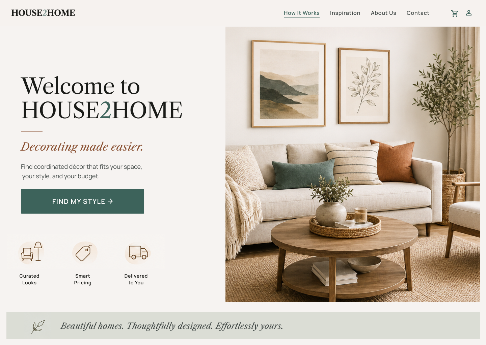
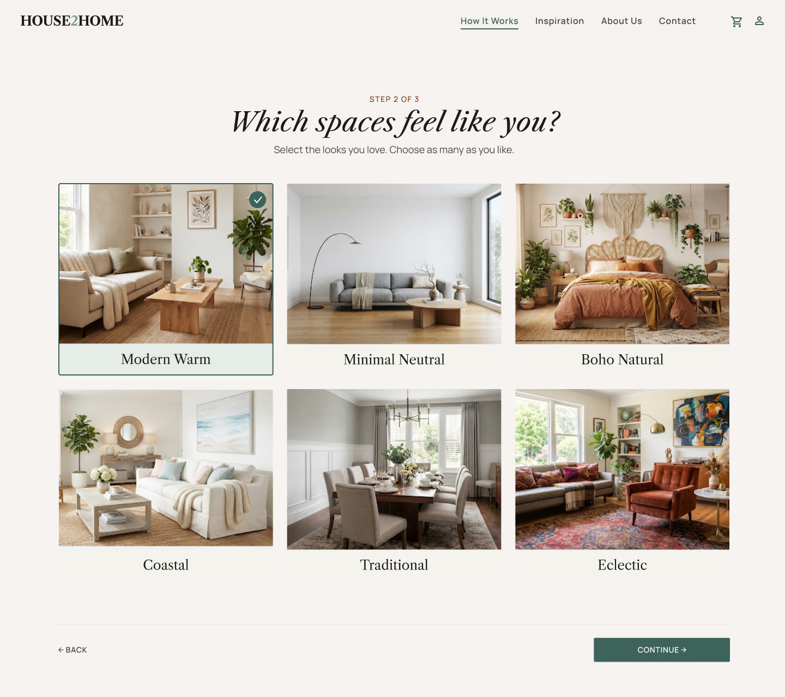
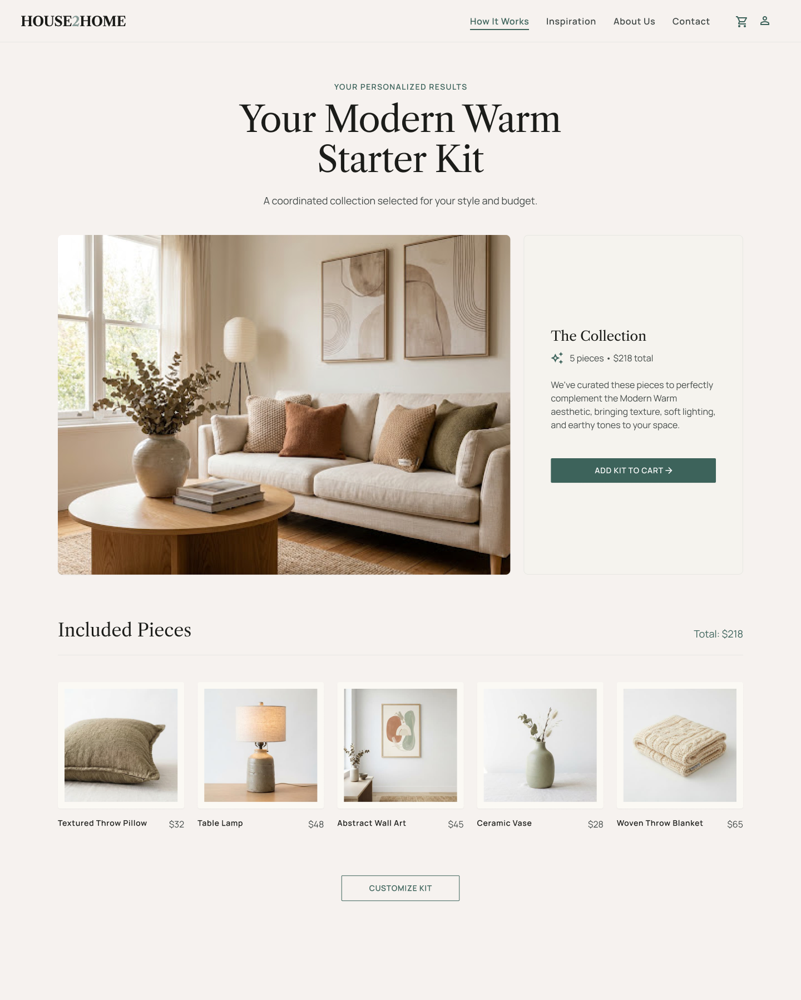
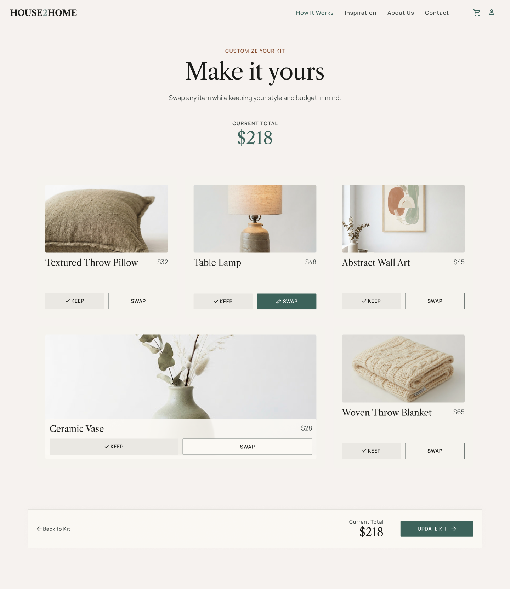

The challenge
People may know the feeling they want for their space but struggle to select individual décor pieces that work well together.
Making decorating decisions easier.
From style inspiration to a coordinated, customizable starter kit that respects users' personal tastes and budgets.
Explore the case study ↓A modified five-day Google Ventures design sprint exploring an easier way to shop for coordinated home décor.
People may know the feeling they want for their space but struggle to select individual décor pieces that work well together.
Guide users through style and budget choices, then recommend a coordinated starter kit they can customize.
I led research, ideation, prototyping, usability testing, and visual design throughout the sprint.
Choose your style → Set your budget → Customize your kit.
I mapped the journey from an initial decorating need through a confident purchase, looking for opportunities to reduce decision fatigue without taking away user control.
Choosing coordinating décor pieces while keeping to a budget can quickly become overwhelming.
Narrow choices early through room, style, and budget, then return control to users through reviewing and swapping items before purchase.
I studied visual shopping and personalization patterns, then sketched ways to simplify design decisions.
Showing a complete space helps people see how individual pieces work together.
Visual style selection helps people identify tastes without knowing specific decorating terminology.
Image-led browsing makes it easier to recognize ideas and styles.
Combine visual style selection with coordinated recommendations, simplifying choices without removing personalization.
I used Crazy 8s and a three-panel solution sketch to move from inspiration into a focused direction.
I selected the concept that best balanced simplicity and user control: a coordinated starter kit based on style and budget, with individual items users could swap.
A curated kit users can make their own. The starter-kit view connects personalization, budget, and customization at a single point in the experience.
A storyboard translated the selected concept into a concrete sequence before prototyping.
I turned the storyboard into a clickable prototype focused on testing the core journey rather than implementing every possible interaction.




The riskiest idea to test was whether guided recommendations could simplify decorating while users still felt in control of their choices.
Four participants ages 45–51 tested the prototype, built starter kits, swapped items, and described what felt clear, confusing, useful, or missing.
“Works well. Flow is good. Easy to understand.”
Liked the simplified choices and ability to select different items.
Liked personalization and swapping; suggested more room flexibility and optional color filters.
Found it comfortable and easy to use but had to scroll to find Continue on two screens.
Interaction clarity mattered more than the overall flow. Two participants attempted to use icons that appeared interactive but did not function in the prototype.
The sprint helped me turn a broad decorating challenge into a focused, testable experience through a series of deliberate design decisions.
Room, style, and budget helped users make fewer choices at once.
People can communicate decorating preferences more easily through imagery than terminology alone.
Elements that look interactive create expectations, even in a focused testing prototype.
Guided enough to feel easy. Flexible enough to feel personal.